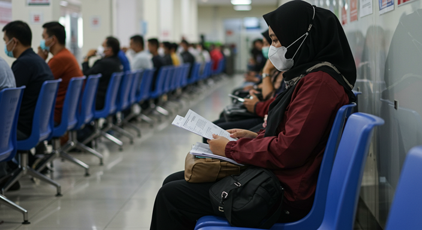

Prosedur Perceraian di Brebes Tegal dan Purwokerto serta kabupaten sekitarnya

Perceraian adalah langkah besar dalam kehidupan yang memerlukan pemahaman mendalam mengenai proses hukum yang berlaku. Bagi masyarakat di Kabupaten Brebes Prosedur Perceraian di Brebes Tegal dan Purwokerto serta kabupaten sekitarnya yang ingin mengajukan gugatan cerai, penting untuk mengetahui tahapan-tahapan yang harus dilalui agar proses ini dapat berjalan lancar dan sesuai dengan peraturan perundang-undangan.
Dalam artikel ini, kami akan menjelaskan secara mendalam tentang bagaimana cara mengajukan gugatan cerai, syarat administrasi yang diperlukan, serta estimasi waktu yang dibutuhkan dalam proses perceraian. Kami juga akan menyertakan referensi dari sumber terpercaya agar Anda dapat memperoleh informasi lebih lanjut jika diperlukan.
Jenis Perceraian di Indonesia
Sebelum membahas lebih jauh mengenai prosedur perceraian di Brebes, penting untuk memahami bahwa di Indonesia terdapat dua jenis perceraian, yaitu:
Cerai Talak – Perceraian yang diajukan oleh suami terhadap istrinya melalui Pengadilan Agama.
Cerai Gugat – Perceraian yang diajukan oleh istri terhadap suaminya melalui Pengadilan Agama.
Bagi pasangan non-Muslim, perceraian ditangani oleh Pengadilan Negeri. Namun, karena mayoritas penduduk di Brebes beragama Islam, pembahasan kali ini akan lebih difokuskan pada prosedur perceraian di Pengadilan Agama.
1. Cara Mengajukan Gugatan Cerai di Pengadilan Agama Brebes Tegal dan Purwokerto serta kabupaten sekitarnya
Bagi masyarakat Brebes yang ingin mengajukan perceraian, berikut adalah tahapan-tahapan yang harus dilakukan:
a. Menyusun Surat Gugatan atau Permohonan
Pihak yang ingin mengajukan perceraian harus membuat surat gugatan (bagi istri) atau permohonan (bagi suami dalam kasus cerai talak). Surat ini harus disusun dengan jelas dan mencantumkan alasan yang sah menurut hukum Islam, seperti:
Perselisihan terus-menerus tanpa penyelesaian
Kekerasan dalam rumah tangga
Salah satu pihak meninggalkan rumah tangga tanpa alasan yang jelas
Tidak ada tanggung jawab dari salah satu pihak
Surat gugatan ini dapat disusun sendiri atau dengan bantuan pengacara agar lebih sistematis dan kuat secara hukum.
b. Pendaftaran Gugatan atau Permohonan
Setelah surat gugatan atau permohonan selesai, langkah selanjutnya adalah mendaftarkannya ke Pengadilan Agama Brebes. Saat ini, Mahkamah Agung menyediakan layanan e-Court, yang memungkinkan masyarakat untuk mendaftarkan gugatan secara online.
Pendaftaran gugatan dapat dilakukan dengan datang langsung ke Pengadilan Agama Brebes atau melalui layanan e-Court di situs resmi Mahkamah Agung.
c. Membayar Biaya Perkara
Setiap proses hukum memerlukan biaya perkara. Besaran biaya ini tergantung pada kompleksitas kasus dan lokasi pengadilan. Namun, bagi masyarakat yang kurang mampu, tersedia layanan pro bono atau bantuan hukum gratis dari Pos Bantuan Hukum (Posbakum) di Pengadilan Agama.
d. Pemanggilan Sidang
Setelah pendaftaran selesai, pengadilan akan mengeluarkan jadwal sidang pertama dan mengirimkan surat panggilan kepada kedua belah pihak. Jika tergugat tidak menghadiri sidang, pengadilan dapat melanjutkan sidang tanpa kehadiran tergugat.
e. Mediasi
Sebelum sidang berlanjut, pengadilan akan mewajibkan kedua belah pihak untuk menjalani proses mediasi. Mediasi bertujuan untuk memberikan kesempatan kepada pasangan yang berselisih agar dapat berdamai. Jika mediasi gagal, sidang akan berlanjut ke tahap berikutnya.
f. Persidangan
Jika mediasi tidak berhasil, maka persidangan akan dilanjutkan dengan tahapan:
Pembacaan gugatan oleh penggugat
Jawaban dari tergugat
Pembuktian (pihak penggugat dan tergugat menghadirkan bukti serta saksi)
Kesimpulan dari kedua belah pihak
Putusan hakim
Setelah putusan dibacakan, baik pihak penggugat maupun tergugat memiliki hak untuk mengajukan banding jika merasa tidak puas dengan hasil persidangan.
2. Syarat Administrasi yang Diperlukan
Untuk mengajukan perceraian di Pengadilan Agama Brebes, berikut adalah dokumen-dokumen yang harus disiapkan:
Surat atau Buku Nikah Asli (beserta fotokopinya)
Fotokopi Kartu Tanda Penduduk (KTP) penggugat atau pemohon
Fotokopi Kartu Keluarga (KK)
Surat Keterangan Tempat Tinggal (jika alamat berbeda dengan yang tercantum di KTP)
Materai Rp10.000 untuk kebutuhan administrasi
Jika dalam perceraian terdapat permasalahan lain seperti hak asuh anak atau pembagian harta gono-gini, maka diperlukan dokumen tambahan seperti akta kelahiran anak, surat kepemilikan aset, dan lainnya.
3. Lama Proses Perceraian
Durasi penyelesaian perceraian sangat bervariasi tergantung pada situasi dan kondisi masing-masing kasus. Secara umum, berikut adalah estimasi waktu yang dibutuhkan:
Jika kedua belah pihak sepakat untuk bercerai, proses biasanya lebih cepat dan bisa selesai dalam 2-3 bulan.
Jika terjadi perselisihan terkait hak asuh anak atau harta gono-gini, maka proses bisa memakan waktu hingga 6-12 bulan.
Jika tergugat tidak hadir dalam sidang, pengadilan dapat mengeluarkan putusan verstek (putusan tanpa kehadiran tergugat), yang bisa mempercepat proses.
Setelah putusan berkekuatan hukum tetap, pihak yang bercerai dapat mengajukan penerbitan Kutipan Akta Perceraian ke Dinas Kependudukan dan Pencatatan Sipil (Disdukcapil) Kabupaten Brebes.
Kesimpulan
Mengajukan perceraian bukanlah keputusan yang mudah dan membutuhkan pemahaman tentang prosedur hukum yang berlaku. Dengan mengetahui langkah-langkah yang harus dilakukan, masyarakat Brebes dapat lebih siap dalam menghadapi proses ini. Jika merasa kesulitan, disarankan untuk berkonsultasi dengan pengacara atau meminta bantuan hukum dari lembaga yang terpercaya.
Untuk informasi lebih lanjut, Anda dapat mengunjungi:
Pengadilan Agama Brebes
Pos Bantuan Hukum (Posbakum) Mahkamah Agung
Semoga informasi ini bermanfaat bagi Anda yang sedang mempertimbangkan atau menjalani proses perceraian di Brebes. Jangan ragu untuk menghubungi kami melalui WhatsApp dan konsultasikan masalah Anda secara GRATIS. Dengan pendampingan pengacara yang tepat, Anda dapat menjalani proses perceraian dengan lebih tenang dan terjamin.
Jika butuh bantuan konsultasikan kepada kami gratis lewat WA di 081330723891 Atau 081330723891